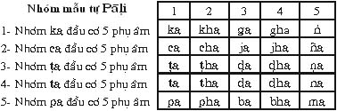

|
Trang web BuddhaSasana |
VU Times font |
|
|
GƯƠNG
BẬC XUẤT GIA
Dhammarakkhita Bhikkhu
[2.2] Giải Thích: 1- Vatthu: Người Cận Sự Nam 1.1- Vatthusampatti như thế nào? Vatthusampatti nghĩa là người cận sự nam đầy đủ 20 tuổi, kể từ khi đầu thai vào lòng mẹ, đồng thời người cận sự nam ấy hoàn toàn không thuộc vào 13 hạng người có lỗi, cấm thọ Tỳ khưu. Ðó gọi là vatthusampatti, người cận sự nam có thể làm lễ thọ Tỳ khưu. 1.2- Vatthuvippatti như thế nào? Vatthuvippatti nghĩa là người cận sự nam thuộc vào một trong 13 hạng người, không thể thọ Tỳ khưu. 13 hạng người có lỗi không thể sửa chữa. 1- Trộm tăng tướng Tỳ khưu: giả Tỳ khưu sống chung với Tỳ khưu
thật (theyyasaṃvāsaka). Tất cả 13 hạng người nam này, gọi là vatthu-vippatti, không cho phép làm lễ thọ Tỳ khưu. Dầu làm lễ thọ Tỳ khưu rồi, cũng không thành tựu Tỳ khưu, nếu tự nhận mình là Tỳ khưu thì chỉ là giả danh Tỳ khưu mà thôi. 2- Ñatti: Tuyên Ngôn 2.1- Ñattisampatti như thế nào? Ñattisampatti nghĩa là vị Ðại Ðức luật sư thông thạo về văn phạm Pāḷi, rành rẽ về cách hành Tăng sự. Tụng 1 lần ñatti (tuyên ngôn) đúng từng nguyên âm, từng phụ âm, từng chữ đúng theo ṭhāna, karaṇa, payatama và đúng theo 10 byañjanabuddhi. Ðó gọi là ñattisampatti: tụng tuyên ngôn hoàn toàn đúng theo văn phạm Pāḷi và cách hành Tăng sự. 2.2- Ñattivippatti như thế nào? Ñattivippatti nghĩa là vị Ðại Ðức luật sư không thông thạo về văn phạm Pāḷi, không rành rẽ về cách hành Tăng sự. Tụng 1 lần ñatti (tuyên ngôn) không đúng từng nguyên âm, từng phụ âm, từng chữ không đúng theo ṭhāna, karaṇa, payatama và không đúng theo 10 byañjanabuddhi. Ðó gọi là ñattivippatti: tụng tuyên ngôn không đúng theo văn phạm Pāḷi và cách hành Tăng sự. Như vậy, cuộc lễ thọ Tỳ khưu không thành tựu, giới tử không trở thành Tỳ khưu, nếu tự nhận mình là Tỳ khưu thì chỉ là giả danh Tỳ khưu mà thôi. 3- Anussāsana: Thành Sự Ngôn 3.1- Anussāsanasampatti như thế nào? Anussāsanasampatti nghĩa là vị Ðại Ðức luật sư thông thạo về văn phạm Pāḷi, rành rẽ về cách hành Tăng sự. Tụng 3 lần kammavācā (thành sự ngôn) đúng từng nguyên âm, từng phụ âm, từng chữ đúng theo ṭhāna, karaṇa, payatama và đúng theo 10 byañjanabuddhi. Ðó gọi là Anussāsanasampatti: tụng thành sự ngôn hoàn toàn đúng theo văn phạm Pāḷi và cách hành Tăng sự. 3.2- Anussāsanavippatti như thế nào? Anussāsanavippatti nghĩa là vị Ðại Ðức luật sư không thông thạo về văn phạm Pāḷi, không rành rẽ về cách hành Tăng sự. Tụng 3 lần kammavācā (thành sự ngôn) không đúng từng nguyên âm, từng phụ âm, từng chữ không đúng theo ṭhāna, karaṇa, payatama và không đúng theo 10 byañjanabuddhi. Ðó gọi là Anussāsanavippatti: tụng thành sự ngôn không đúng theo văn phạm Pāḷi và cách hành Tăng sự. Như vậy, cuộc lễ thọ Tỳ khưu không thành tựu, giới tử không trở thành Tỳ khưu thật. Nếu tự nhận mình là Tỳ khưu thì chỉ là giả danh Tỳ khưu mà thôi. Vị Ðại Ðức tụng ñatticatutthakammavācā: tụng 1 lần ñatti (tuyên ngôn), tiếp theo tụng 3 lần kammavācā (thành sự ngôn), đúng từng nguyên âm, từng phụ âm, từng chữ đúng theo: - Ṭhāna: nơi phát sanh của nguyên âm, phụ âm. Trong ngôn ngữ Pāḷi gồm có 41 âm: - Nguyên âm có 8 âm, đó là: a, ā, i, ī, u, ū, e, o - Phụ âm có 33: Ka kha ga gha ṅ Ðó là 41 âm gồm cả nguyên âm và phụ âm. Chia thành 6 ṭhāna, 6 karaṇa và 4 payatana. 6 Ṭhāna và 6 Karaṇa Nơi phát âm ở cổ, gồm có 8 âm: 2 nguyên âm và 6 phụ âm là: a, ā, ka, kha, ga, gha, ṅ, ha. - Và cũng là kaṇṭhakaraṇa: nhân phát âm ở cổ. 2- Tāluṭṭhāna: Nơi phát âm ở đóc họng, gồm có 8 âm: 2 nguyên âm và 6 phụ âm là: i, ī, ca, cha, ja, jha, ña, ya. - Và jivhāmajjhakaraṇa: nhân phát âm ở giữa lưỡi. 3- Muddhaṭṭhāna: Nơi phát âm ở hàm ếch, gồm có 7 phụ âm là: ṭa, ṭha, ṇa, ṇha, ṇa, ra, ḷa. - Và jivhopaggakaraṇa: nhân phát âm ở gần đầu lưỡi. 4- Dantaṭṭhāna: Nơi phát âm ở 2 đầu răng, gồm có 7 phụ âm là: ta, tha, da, dha, na, la, sa. - Và jivhaggakaraṇa: nhân phát âm ở đầu lưỡi. 5- Oṭṭhaṭṭhāna: Nơi phát âm ở 2 đầu môi, gồm có 7 âm: 2 nguyên âm và 5 phụ âm là: u, ū, pa, pha, ba, bha, ma. - Và cũng là oṭṭhakaraṇa: nhân phát âm ở 2 đầu môi. 6- Nāsikaṭṭhāna: Nơi phát âm nơi lỗ mũi, có 1 phụ âm là: niggahita: ṃ, phụ âm m có dấu chấm ở bên dưới, như aṃ, iṃ, uṃ. - Và cũng là nāsikakaraṇa: nhân phát âm nơi lỗ mũi. Những nguyên âm phụ âm phát sanh 2 ṭhāna: - Nguyên âm e: phát âm nơi 2 ṭhāna: kaṇṭhatāluṭṭhāna:
nơi cổ và đóc họng. 4 Payatana: sự cố gắng phát âm đúng theo ṭhāna và karaṇa, có 4 cách: 1- Saṃvata: sự cố gắng đóng ṭhāna và karaṇa. Ðó là 4 cách cố gắng phát ra âm thanh cho đúng ṭhāna và karaṇa. Vấn đề này nêu ra ở đây để hiểu tổng quát về ṭhāna, karaṇa và payatana. Sự hiểu rõ ràng về văn phạm Pāḷi là phận sự của vị Ðại Ðức luật sư tụng ñatti (tuyên ngôn) và kammavācā (thành sự ngôn) trong lúc hành Tăng sự. 10 byañjanabuddhi Trong bộ Chú giải Luật tạng Parivāra dạy rằng: Vị Ðại Ðức luật sư tụng ñatti và kammavācā cần phải thông thạo, rành rẽ 10 byañjanabuddhi, như sau: "Sithilaṃ dhanitañca dīgharassaṃ Nghĩa: Vị Ðại Ðức luật sư tụng ñatti và kammavācā nên hiểu biết rõ 10 loại byañjanabuddhi là: sithila, dhanita, dīgha, rassa, garuka, lahuka, niggahita, sambandha, vavatthita và vimutta. Giải Thích: Trong ngôn ngữ Pāḷi có 41 âm. - Nguyên âm có 8 âm đó là: a, ā, i, ī, u, ū, e, o.  6- Không nhóm có 8 phụ âm: ya, ra, la, va, sa, ḷa, ha, ṃ. 1- Sithila là những phụ âm ở vị trí thứ nhất và thứ ba của mỗi nhóm gồm có 10 phụ âm: ka, ga, ca, ja, ṭa, ṇa, ta, da, pa, ba. Mười phụ âm này khi phát âm cố gắng đụng ṭhāna và karaṇa phát âm giọng yếu. 2- Dhanita là những phụ âm ở vị trí thứ nhì và thứ tư của mỗi nhóm gồm có 10 phụ âm: kha, gha, cha, jha, ṭha, ṇha, tha, dha, pha, bha. Mười phụ âm này khi phát âm, cố gắng đụng ṭhāna và karaṇa phát âm giọng mạnh. 3- Dīgha là những nguyên âm đọc giọng dài gồm có: ā, ī, ū, e, o, 5 nguyên âm đơn này, đứng trước phụ âm hoặc ghép sau phụ âm. Khi tụng đọc giọng dài gấp đôi nguyên âm giọng ngắn. Thời gian tụng đọc giọng dài khoảng chừng 2 lần nháy mắt liên tục (không nên kéo dài như giọng ca hát ngân nga). 4- Rassa là những nguyên âm đọc giọng ngắn gồm có: a, i, u. Ba nguyên âm đơn này, đứng trước phụ âm hoặc ghép sau phụ âm. Khi tụng đọc giọng ngắn bằng một nửa nguyên âm tụng đọc giọng dài. Thời gian tụng đọc giọng ngắn khoảng chừng 1 lần nháy mắt liên tục (không nên kéo dài như giọng ca hát ngân nga). Dầu nguyên âm tụng đọc giọng dài như e, o, nhưng khi ghép chung với một phụ âm (byañjanasamyoga) trở thành tụng đọc giọng ngắn. Ví dụ: Seyyo, sotthi, ettha, nguyên âm ghép với ey, ot, et. Khi tụng đọc trở thành giọng ngắn. Sey-yo, sot-thi, et-tha.... 5- Garuka là những nguyên âm đọc giọng nặng gồm có: ā, ī, ū, e, o. - Năm nguyên đơn, đứng trước phụ âm hoặc ghép sau phụ âm đọc giọng nặng. Ví dụ: Yā, so.... - Nguyên âm ghép với phụ âm (byañjanasamyoga). Ví dụ: Na+k-khamati = nakkhamati, "nak" tụng đọc giọng nặng và chậm.... 6- Lahuka là những nguyên âm đọc giọng nhẹ gồm có: a, i, u. - Và những nguyên âm không ghép dính vào phụ âm khác. Ví dụ: Na-khamati, "na" tụng đọc giọng nhẹ và mau. 7- Sambandha là những phụ âm trước ghép với nguyên âm sau, khi tụng đọc dính theo nguyên âm sau. Ví dụ: Yassāyasmato do 2 danh từ ghép yassa +āyasmato. Xóa nguyên âm "a" sau phụ âm "s", rồi ghép phụ âm "s" với nguyên âm "ā" thành yassāyasmato. 8- Vavatthita là những chữ trước đọc tách rời với chữ sau. Ví dụ: Yassa āyasmato, yassa chữ trước, āyasmato chữ sau tụng đọc tách rời nhau. 9- Niggahita là những phụ âm m có chấm dưới (ṃ). Ví dụ: aṃ, iṃ, uṃ. Khi tụng đọc niggahitanta theo 2 ṭhāna: - Sakaṭṭhāna phát âm tùy theo ṭhāna của phụ âm. Khi tụng đọc niggahitanta này, đặc biệt đóng hơi cổ, bằng cách ngậm miệng lại để cho hơi đi lên theo đường ra lỗ mũi. Ví dụ: Buddhaṃ, Dhammaṃ, Saṃgha.ṃ.... - Tụng makaranta: chữ m không có chấm dưới, khi tụng đọc phụ âm m theo oṭṭhaṭṭhāna phát âm nơi 2 đầu môi, phải ngậm miệng. Ví dụ: Buddham, Dhammam, Saṃgham.... 10- Vimutta là những phụ âm tụng phải mở miệng đọc rõ, không ngậm miệng, không để cho hơi lên lỗ mũi. Ví dụ: Su-ṇā-tu, e-sā ñatti.... Vị Ðại Ðức luật sư tụng ñatti-kammavācā luôn luôn ở tư thế ngồi chồm hỗm hai tay cầm bảng ñatti-kammavācā, tụng đọc từng nguyên âm, từng phụ âm, từng chữ rõ ràng đúng theo văn phạm Pāḷi, theo mỗi cách thức hành Tăng sự. Trong 10 byañjanabuddhi này xác định kết quả thành tựu hoặc không thành tự buổi lễ hành Tăng sự của chư Tỳ khưu Tăng. Theo bộ luật Kaṅkhāvitaranīṭīkā dạy rằng: "Kammavipattilakkhaṇa: Sithile kattabbe dhanitaṃ, dhanite kattabbe sithilaṃ, vimute kattabbe niggahitaṃ, niggahite kattabbe vimuttaṃ’ti. "Imāni cattāri byañjanāni anto kammavācāya kammaṃ dūsenti". "Trạng thái Tăng sự bị hư: Khi vị Ðại Ðức luật sư tụng phụ âm sithila trở thành phụ âm dhanita; khi tụng phụ âm dhanita trở thành phụ âm sithila; và khi tụng phụ âm, nguyên âm vimutta trở thành phụ âm, nguyên âm niggahita; khi tụng phụ âm, nguyên âm niggahita trở thành phụ âm, nguyên âm vimutta. Trong khi tụng đọc ñatti-kammavācā, có sự nhầm lẫn trong 4 phụ âm, nguyên âm này, thì buổi lễ hành Tăng sự ấy bị hư, không thành tựu". Ngoài những phụ âm thuộc 4 loại: sithila, dhanita, niggahita, vimutta ra, còn lại những phụ âm, nguyên âm thuộc 6 loại: dīgha, rassa, garuka, lahuka, sambandha, vavatthita nếu tụng đọc không đúng, thì việc hành Tăng sự (Saṃghakamma) ấy không bị hư, Tăng sự ấy vẫn thành tựu. Song gọi là "tụng không hay" (duruttaṃ karoti). Lễ thọ Tỳ khưu, khi vị Ðại Ðức luật sư tụng ñatti-catutthakammavācā đúng theo văn phạm Pāḷi, đúng theo 10 byañjanabuddhi hành đúng theo Tăng sự, gọi là ñattisampatti và anussāsanasampatti hay kamma-vācāsampatti, thì buổi lễ thọ Tỳ khưu được thành tựu, giới tử trở thành vị Tỳ khưu (Bhikkhu) thật. Nếu trường hợp vị Ðại Ðức luật sư tụng ñatticatutthakammavācā không đúng theo văn phạm Pāḷi, và không đúng theo 10 byañjanabuddhi trong đó có sithila, dhanita, niggahita, vimutta thì hành Tăng sự ấy bị hư, gọi là ñattivippatti và anussāsanavippatti hay kammavācā-vippatti, buổi lễ thọ Tỳ khưu không thành tựu, giới tử không trở thành vị Tỳ khưu, nếu tự nhận mình là Tỳ khưu, thì chỉ là giả danh Tỳ khưu mà thôi. 4- Sīmā Sīmā là một chỗ có diện tích không lớn quá cũng không nhỏ quá, có chu vi làm ranh giới rõ ràng, được chư Tỳ khưu Tăng đã quy định, để làm nơi chư Tỳ khưu Tăng hội họp hành mọi Tăng sự Saṃghakamma như: uposatha, pavāraṇā, upasampadā, kathina, parivāsa, mānatta abbhāna... đúng theo luật của Ðức Phật đã ban hành. Sīmā có 2 loại: 4.1- Baddhasīmā: là chỗ sīmā đã được chư Tỳ khưu Tăng hội họp quy định có diện tích không lớn quá, cũng không nhỏ quá, tối thiểu đủ cho 21 vị Tỳ khưu Tăng ngồi hành Tăng sự, có chu vi rõ ràng, được làm đấu bằng 1 trong 8 loại nimitta mà Ðức Phật đã ban hành cho phép theo luật, và được chư Tỳ khưu Tăng đã hành Tăng sự tụng sīmāsammutikammavācā để trở thành sīmā làm ranh giới chu vi, để hành mọi Tăng sự của chư Tỳ khưu Tăng. Baddhasīmā này có 2 loại: là sīmā được thành tựu do chư Tỳ khưu Tăng hội họp lại một nơi nhất định rồi hành Tăng sự tụng Samānasaṃvāsasīmāsammuti-kammavācā để trở thành sīmā. 4.1.2- Avippavāsasīmā: là sīmā được thành tựu do chư Tỳ khưu Tăng tụng Avippavāsasīmāsammutikam-mavācā liền sau khi đã thành tựu samānasaṃvāsasīmā, vì sự lợi ích xa rời tam y mà không bị phạm tội. Tương tự cũng có 2 loại sīmā: là sīmā rộng lớn tối đa 3 do tuần, do chư Tỳ khưu Tăng thống nhất quy định hành Tăng sự tụng ñatti-kammavācā, để trở thành mahāsīmā. Khi hành Tăng sự, tất cả chư Tỳ khưu ở trong phạm vi mahāsīmā đều phải đến hội họp một nơi, ngồi trong hatthapāsa (2 cùi tay+1 gang). Trường hợp vị Tỳ khưu nào bị bệnh không thể đến hội họp được, vị Tỳ khưu ấy phải gởi chanda pārisuddhi (sự hài lòng, tâm trong sạch) của mình cho một vị Tỳ khưu khác và nhờ vị Tỳ khưu ấy đến trình giữa chư Tăng. 4.1.4- Khaṇṇasīmā: là sīmā nhỏ nằm trong mahā-sīmā, do tất cả chư Tỳ khưu Tăng quy định bằng cách hành Tăng sự tụng ñatti-kammavācā để trở thành khaṇṇasīmā. Chư Tỳ khưu Tăng có thể hội họp trong khaṇṇasīmā này tối thiểu 21 vị hành Tăng sự, mà không liên quan đến chư Tỳ khưu Tăng hiện đang ở trong mahaøsīmā. Khaṇṇasīmā cần phải có một đường ranh nhỏ xung quanh bao bọc, để phân chia khoảng cách khaṇṇasīmā và mahāsīmā, gọi là sīmantarika. Vì khaṇṇasīmā có thể giáp ranh với gāmasīmā, mà không thể giáp ranh với mahāsīmā, cho nên phải có đường sīmantarika. 4.2- Abhaddhasīmā: là sīmā thành tựu một cách tự nhiên, không do chư Tỳ khưu Tăng hội họp tụng ñatti-kammavācā như bhaddhasīmā. Abhaddhasīmā có 3 loại:
4.3- Sīmāsampatti như thế nào? Sīmāsampatti nghĩa là sīmā có đầy đủ 3 chi pháp: dấu "nimitta" chu vi sīmā đầy đủ không thiếu một dấu nào. Nimitta: dấu có 8 loại: núi, đá, rừng, cây cối, con đường, con sông, ổ mối và nước. Trong 8 loại nimitta này có thể dùng loại nào cũng được, hoặc dùng xen lẫn nhau. Khi hành lễ thông báo chính xác nimitta phải giáp mí chồng lên nhau, gọi là nimittasampatti. 2- Purisasampatti: chư Tỳ khưu Tăng hội đầy đủ. Chư Tỳ khưu Tăng hội từ 4 vị Tỳ khưu Tăng thật trở lên để làm lễ hành Tăng sự qui định ranh giới sīmā. Nếu trong một khu vực xã, quận (gāma) có chư Tỳ khưu hiện diện bao nhiêu, thì tất cả chư Tỳ khưu ấy đều phải được mời đến tham dự. Nếu vị Tỳ khưu nào không đi được, vị Tỳ khưu ấy phải cho chanda: sự hài lòng của mình, đến một vị Tỳ khưu khác và nhờ vị Tỳ khưu ấy đến trình giữa chư Tỳ khưu Tăng, tất cả chư Tỳ khưu Tăng phải ngồi trong hatthapāsa: khoảng 2 cùi tay với 1 gang, để làm lễ hành Tăng sự tụng sīmāsammutikammavācā quy định ranh giới sīmā, gọi là purisasampatti. 3- Ñatti-kammavācāsampatti: Tụng một lần ñatti (tuyên ngôn) và tiếp theo tụng 1 lần kammavācā (thành sự ngôn), gọi là ñattidutiyakammavācā, đúng theo văn phạm Pāḷi và luật hành Tăng sự. Sīmā là một công việc rất khó hiểu trong Luật tạng. Ở đây chỉ nêu 3 chi pháp chính để thành tựu sīmā mà thôi. Khi hội đầy đủ 3 chi pháp trên gọi là sīmāsampatti, làm chỗ để cho chư Tỳ khưu Tăng dễ dàng hành mọi Tăng sự đúng theo luật mà Ðức Phật đã chế định. 4.4- Sīmāvippatti như thế nào? Sīmāvippatti nghĩa là chỗ ranh giới sīmā không thành tựu, thì không thể làm nơi để chư Tỳ khưu Tăng hội họp hành Tăng sự đúng theo luật mà Ðức Phật đã ban hành. Trong bộ Chú giải Kankhāvitaraṇa dạy có 11 trường hợp sīmā hư như sau:
Ðó là 11 loại sīmāvipatti, sīmā bị hư, không đúng theo luật mà Ðức Phật đã chế định, cho nên chư Tỳ khưu Tăng không thể làm nơi hội họp hành Tăng sự.
Nếu chư Tỳ khưu Tăng hội họp hành Tăng sự tại sīmā hư, thì lễ thọ Tỳ khưu sẽ không thành tựu, giới tử không trở thành Tỳ khưu thật. 5- Purisa: Tỳ khưu Tăng 5.1- Purisasampatti như thế nào? Purisasampatti: nghĩa là chư Tỳ khưu Tăng hội đủ số để hành Tăng sự. Ðức Phật chế định làm lễ thọ Tỳ khưu tại trung Ấn Ðộ (majjhimapadesa) phải có ít nhất 10 vị Tỳ khưu thật, hay nhiều hơn càng tốt. Còn ngoài trung Ấn Ðộ ra, các tỉnh nơi biên địa, các nước khác, làm lễ thọ Tỳ khưu có ít nhất 5 vị Tỳ khưu thật, hay nhiều hơn càng tốt. Chư Tỳ khưu Tăng hành Tăng sự tụng ñatticatutthakammavācā xong, giới tử Sa di trở thành Tỳ khưu đúng theo luật của Ðức Phật đã chế định. Ðó gọi là purisasampatti: chư Tỳ khưu Tăng hội đầy đủ để hành Tăng sự. 5.2- Purisavippatti như thế nào? Purisavippatti: nghĩa là chư Tỳ khưu Tăng hội họp không đủ số 10 vị Tỳ khưu thật, để hành Tăng sự làm lễ thọ Tỳ khưu tại trung Ấn Ðộ, hoặc không đủ 5 vị Tỳ khưu thật, để hành Tăng sự làm lễ thọ Tỳ khưu tại các tỉnh nơi biên địa, hoặc các nước khác. Dầu có đông Tỳ khưu, trên 5 vị, nhưng trong số đông ấy có nhiều Tỳ khưu giả, không đủ 5 vị Tỳ khưu thật. Như vậy, cũng gọi là purisavippatti: chư Tỳ khưu Tăng hội họp không đầy đủ số lượng tối thiểu để hành Tăng sự làm lễ thọ Tỳ khưu. Nếu làm lễ thọ Tỳ khưu, dầu tụng ñatticatuttha-kammavācā xong, cuộc lễ thọ Tỳ khưu không thành tựu, giới tử Sa di cũng không trở thành Tỳ khưu thật. Do đó cho nên, giới tử muốn trở thành Tỳ khưu thật, cần phải hội đầy đủ 5 chi pháp: vatthusampatti, ñattisampatti, anussāvanasampatti, sīmāsampatti và purisasampatti. Nếu thiếu một chi pháp nào, hay một chi tiết nào, thì buổi lễ thọ Tỳ khưu không thành tựu, giới tử chắc chắn sẽ không trở thành Tỳ khưu đúng theo luật của Ðức Phật ban hành, nếu tự nhận là Tỳ khưu thì chỉ là giả danh. 7- DAḶHĪKAMMA: Tăng sự vững chắc Sau khi lễ thọ Tỳ khưu xong, nếu Tỳ khưu phát sanh tâm hoài nghi không biết việc hành Tăng sự tụng ñatti-catutthakammavācā của mình thành tựu hay không thành tựu? Như vậy, muốn được chắc chắn, vị Tỳ khưu ấy có thể thỉnh chư Tỳ khưu tụng ñatticututthakammavācā lại một lần nữa, hoặc nhiều lần vì sự lợi ích như sau: - Nếu trước kia việc tụng ñatticatutthakammavācā đã thành tựu, thì việc tụng lần này càng thêm vững chắc. - Nếu trước kia việc tụng ñatticatutthakammavācā không thành tựu, thì việc tụng lần này Tăng sự được thành tựu, chắc chắn trở thành Tỳ khưu thật. Như trong Chú giải Luật tạng, bộ Parivāra aṭṭha-kathā dạy: "Sace pana akkharaparihīnaṃ vā padapari-hīnaṃ vā duruttapadaṃ vā hoti, tassa sodhanatthaṃ punappunaṃ vattuṃ vaṭṭati. Idaṃ akuppakam-massa daḷhīkammaṃ hoti, kuppakamme kammaṃ hutvā tiṭṭhati. Ñatticatutthakammavācā ñattiñca tisso ca kammavācāyo sāvetvāva kātabbaṃ, apalokana-kammādivasena na kātabbaṃ". -- [Vinayapiṭaka Parivāra aṭṭhakathā - Kammavaggavaṇṇanā. ] "Nếu Tăng sự bị hư do bởi đọc sai nguyên âm, phụ âm, hoặc bị hư do bởi đọc sai chữ, hoặc hư do tụng không rõ; để làm cho trong sạch Tăng sự ấy, thì nên tụng đi, tụng lại nhiều lần. Sự tụng nhiều lần này, Tăng sự thêm vững chắc đối với Tăng sự trước kia không bị hư; hoặc thành tựu Tăng sự, mà trước kia bị hư. Việc hành Tăng sự lần này, chỉ cần tụng một lần tuyên ngôn và 3 lần thành sự ngôn, không nên hành các Tăng sự khác như xét hỏi y bát v.v...". Hành Tăng Sự Daḷhīkamma Daḷhīkamma: Tăng sự vững chắc, Tăng sự này thường hành sau khi đã làm lễ thọ Tỳ khưu. Nước Myanmar, giới tử làm lễ thọ Tỳ khưu (upasam-padā) tại sīmā, chư Tỳ khưu Tăng đặt tầm quan trọng của việc hành Tăng sự tụng ñatticatutthakammavācā (tụng 1 lần tuyên ngôn, liền tiếp theo tụng 3 lần thành sự ngôn); cho nên lễ thọ Tỳ khưu cho một giới tử, hoặc 2-3 giới tử cùng một lúc; khi hành Tăng sự tụng ñatticatuttha-kammavācā thường tụng 3 lần, mỗi lần ba vị.
Như vậy, buổi lễ thọ Tỳ khưu của giới tử, gồm tất cả 9 vị Ðại Ðức luật sư hành Tăng sự tụng ñatticatuttha-kammavācā. Thật ra, trong 9 vị Ðại Ðức luật sư, chỉ cần một vị Ðại Ðức luật sư hành Tăng sự tụng ñatticatuttha-kammavācā đúng theo cách hành Tăng sự; nghĩa là tụng từng mỗi âm, mỗi chữ, mỗi câu đúng theo văn phạm Pāḷi và 10 byañjanabuddhi là buổi thọ Tỳ khưu của giới tử thành tựu, giới tử trở thành vị Tỳ khưu thật; còn 8 vị Ðại Ðức luật sư kia hành Tăng sự tụng ñatticatuttha-kammavācā đúng nữa, thì làm cho Tăng sự càng thêm vững chắc, vị tân Tỳ khưu càng vững tâm, có đức tin vững chắc nơi Tam bảo. Về sau, các vị Tỳ khưu có duyên lành, có cơ hội gặp được những bậc Ðại Trưởng lão, đức độ lớn muốn nương nhờ nơi quý Ngài, bằng cách xin hành daḷhīkamma. Các vị Tỳ khưu cung thỉnh quý Ngài từ bi hành Tăng sự daḷhīkamma một lần nữa, (hoặc có thể hành Tăng sự daḷhīkamma nhiều lần trong cuộc đời Tỳ khưu của mình thì càng tốt). Cách Hành Tăng Sự Daḷhīkamma Hành Tăng sự daḷhīkamma không phải là lễ thọ Tỳ khưu. Cho nên, giai đoạn đầu không có phần xét hỏi về y bát, 13 pháp tai hại trong thân thể, cuộc đời; và giai đoạn cuối không có ghi nhận thời gian: giờ, ngày, tháng, năm, thời tiết. Vị Thầy Tế độ không dạy 4 pháp nương nhờ và 4 pháp không nên hành. Nghi Thức xin Hành Tăng Sự Daḷhīkamma Vị Tỳ khưu xin vị Ðại Trưởng lão làm Thầy Tế độ, để tụng trong khi hành Tăng sự ñatticatutthakammavācā như sau: 1- Upajjhāyo me (no) Bhante hohi. (3 lần)
2- Gọi tên vị Thầy Tế độ. Gọi tên các vị Tỳ khưu (nhiều nhất 3 vị Tỳ khưu). 3- Hai – ba vị Ðại Ðức luật sư cùng nhau hành Tăng sự tụng Ñatticatutthakammavācā xong, là lễ hành Tăng sự Daḷhīkamma xong. Sự lợi ích của lễ hành Tăng sự daḷhīkamma như thế nào? Hành Tăng sự daḷhīkamma có hai điều lợi ích như trong Chú giải bộ Parivāra, phần Kammavaggavaṇṇanā. - Trước kia hành Tăng sự ñatticatutthakammavācā đã thành tựu, nay hành Tăng sự daḷhīkamma thêm vững chắc, thêm đức tin vững vàng nơi Tam bảo.... - Trước kia hành Tăng sự ñatticatutthakammavācā không thành tựu, do đọc sai nguyên âm, phụ âm, hoặc đọc sai chữ..., nay hành Tăng sự daḷhīkamma để làm cho Tăng sự thành tựu. Trước kia không thành Tỳ khưu đúng theo luật, nay sau khi hành daḷhīkamma Tăng sự xong, trở thành Tỳ khưu thật. Thật ra, tụng ñatticatutthakammavācā có một oai đức rất phi thường, và chư Tỳ khưu Tăng hội đủ hành Tăng sự cũng có một oai đức phi thường. Do đó, nước Myanmar, có một số Tỳ khưu thường hành Tăng sự daḷhīkamma để hỗ trợ cho mình được thêm vững đức tin trong sạch nơi Tam bảo. Cho nên, trong cuộc đời Tỳ khưu, nếu có cơ hội, thì nên hành Tăng sự daḷhīkamma nhiều lần càng tốt. 8- TÍCH HOÀNG TỬ RĀHULA THỌ SA DI Hoàng tử Rāhula hạ sanh nhằm ngày rằm tháng 6, ngay đêm Ðức Bồ Tát Siddhattha trốn đi xuất gia năm 29 tuổi. Ðức Bồ Tát nghe tin báo hoàng hậu Yasodhara vừa mới hạ sanh Hoàng tử, tình thương con phát sanh, trước khi xuất gia, Ngài muốn nhìn thấy mặt Hoàng tử. Ðức Bồ Tát lén đứng ở cửa nhìn vào, hoàng hậu Yasodhara đang mằn nghiêng ngủ ngon giấc, tay choàng ngang qua đầu Hoàng tử, nên Ngài không nhìn thấy rõ mặt hoàng nhi, Ngài nghĩ: "Nếu ta bước vào dỡ cánh tay, Hoàng hậu sẽ tỉnh giấc, có thể làm trở ngại sự xuất gia của ta. Không sao! Bây giờ ta chưa thấy rõ mặt hoàng nhi, sau khi ta đã chứng đắc thành Bậc Chánh Ðẳng Giác rồi, ta sẽ trở về nhìn thấy hoàng nhi sau vậy!". Ðức Bồ Tát lặng lẽ lui ra, lên ngựa Kaṇṇaka cùng với Channa, nô bộc thân tín, trốn ra khỏi thành xuất gia mà không một ai hay biết cả. Ðến năm 35 tuổi Ðức Bồ Tát chứng đắc thành Bậc Chánh Ðẳng Giác, thuyết pháp tế độ chúng sinh. Ðức vua Suddhodana hay tin thái tử Siddhattha đã trở thành Ðức Phật, Ðức vua truyền cho các quan cận thần đi thỉnh Ðức Phật ngự trở về kinh thành Kapilavatthu để Ðức vua được chiêm ngưỡng. Mãi đến một năm sau Ðức Phật mới ngự về đến kinh thành Kapilavatthu, vào ngày 16 tháng 4, sau khi đã thành Phật được 1 năm lẻ 1 ngày, gần 7 năm xa cách kể từ khi rời bỏ kinh thành Kapilavatthu, Ðức Thế Tôn cùng Tăng đoàn 20.000 chư Thánh A-ra-hán ngự về kinh thành Kapilavatthu. Ðức vua Suddhodana, hoàng tộc cùng toàn thể dân chúng đón rước Ðức Phật cùng chư Thánh Tăng rất trọng thể. Ðức Phật dẫn đầu Tăng đoàn 20.000 chư Thánh A-ra-hán ngự đến vườn Nigrodhā. Tại đây Ðức Phật đã hóa thần thông yamaka pāṭihāriya: thần thông lửa và nước song song phát xuất từ kim thân của Ngài, và một con đường bằng thất bảo trên hư không, rồi Ngài ngự đi kinh hành trên con đường ấy. Ðức vua Suddhodana vô cùng kính phục, cúi đầu đảnh lễ Ðức Phật, làm cho toàn thể hoàng tộc bất kỳ lớn nhỏ cũng đều cúi đầu đảnh lễ theo. Ðức Phật bèn thuyết pháp tế độ đức phụ vương cùng dòng họ Sakya. Tất cả đều hoan hỉ lời dạy của Ngài, nhưng chỉ đảnh lễ ra về, mà không có lời thỉnh mời Ðức Phật và chư Thánh Tăng độ ngọ vào ngày mai. Sáng ngày hôm sau, Ðức Phật dẫn đầu Tăng đoàn 20.000 bậc Thánh A-ra-hán mặc y mang bát vào kinh thành Kapilavatthu đi bát theo từng nhà. Ðức vua Suddhodana hay tin, vội vàng đến hầu Ðức Phật bạch rằng: - Kính bạch Ðức Thế Tôn, con cảm thấy vô cùng xấu hổ khi nhìn cảnh Ðức Thế Tôn cùng 20.000 Thánh Tăng ôm bát đi khất thực từng nhà như thế này! Con là vua một nước, không lo đủ vật thực dâng cúng đến Ðức Thế Tôn cùng chư Thánh Tăng được sao! Ðức Thế Tôn truyền dạy rằng: - Thưa phụ vương, sự đi khất thực từng nhà, đó là truyền thống dòng dõi của Như Lai. - Kính bạch Ðức Thế Tôn, dòng dõi của chúng ta là vua chúa cao quý, truyền thống từ đời vua này sang đời vua khác, chưa bao giờ có việc đi khất thực từng nhà. - Thưa phụ vương, dòng dõi vua chúa là dòng dõi của phụ vương. Còn Như Lai thuộc dòng dõi theo truyền thống của chư Phật, từ Ðức Phật Dīpaṅkāra, Ðức Phật Koṇṇaññā, Ðức Phật Maṅgala... cho đến Ðức Phật Kassapa hay vô số chư Phật trong quá khứ, đều theo truyền thống đi khất thực từng nhà để nuôi mạng. Ðức Phật thuyết pháp tế độ Ðức vua chứng ngộ Tứ thánh đế, chứng đắc Nhập Lưu Thánh Ðạo, Nhập Lưu Thánh Quả trở thành bậc Thánh Nhập Lưu. Lúc đó, Ðức vua Suddhodana đưa 2 tay nhận bình bát của Ðức Phật, và thỉnh Ðức Phật cùng 20.000 chư Thánh A-ra-hán ngự đến cung điện Ðức vua. Tại cung đình, Ðức Phật thuyết pháp tế độ Ðức vua chứng đắc Nhất Lai Thánh Ðạo, Nhất Lai Thánh Quả trở thành bậc Thánh Nhất Lai. Và dì mẫu Mahāpajāpatigotamī chứng đắc Nhập Lưu Thánh Ðạo, Nhập Lưu Thánh Quả trở thành bậc Thánh Nhập Lưu. Ðức vua Suddhodana cúng dường vật thực ngon lành đến Ðức Phật cùng chư Thánh A-ra-hán. Ðức vua kính thỉnh Ðức Phật cùng chư Thánh A-ra-hán mỗi ngày đến cung điện để cúng dường vật thực. Ðến ngày thứ ba, Ðức Phật cùng chư Thánh A-ra-hán đến cung điện đức vua Suddhodana. Hôm ấy, nhằm ngày cử hành lễ đăng quang lên ngôi báu và hôn lễ Hoàng tử Nanda [*] cùng công chúa Janapadakalyāṇī 2. Sau khi thọ thực xong, Ðức Thế Tôn trao bát cho hoàng tử Nanda đi theo Ngài về chùa Nigrodhā. Hoàng tử Nanda đi theo nhưng vẫn còn nghe văng vẳng tiếng công chúa Janapadakalyāṇī căn dặn "Hoàng huynh hãy mau trở về".
Khi đến chùa Nigrodhā Ðức Phật truyền dạy rằng: - Này Nanda, con muốn thọ Tỳ khưu hay không? Hoàng tử Nanda vì quá kính trọng Ðức Phật, nên không dám từ chối, bèn bạch với Ðức Phật rằng: - Kính bạch Ðức Thế Tôn, dạ vâng, con muốn thọ Tỳ khưu. Ðức Thế Tôn truyền dạy chư Tỳ khưu Tăng làm lễ thọ Tỳ khưu cho hoàng tử Nanda. Hoàng tử Nanda đã thọ Tỳ khưu theo lời cho phép của Ðức Phật. Hoàng tử Rāhula thọ Sa di Ðức Thế Tôn ngự tại chùa Nigrodhā gần kinh thành Kapilavatthu đã đến ngày thứ bảy, buổi sáng Ðức Phật cùng chư Thánh A-ra-hán ngự đến cung điện của đức phụ vương để độ ngọ. Ðang lúc Ðức Phật ngự tại cung điện, khi ấy, hoàng hậu Yasodhara gọi hoàng tử Rāhula mới lên 7 mà dạy rằng: - Eso te Rāhula pitā, gacchassu dāyajjaṃ yācāhi. "Này Rāhula con yêu quý, Ðức Phật cao thượng đang ngự kia, chính là phụ vương của con. Con hãy đến xin thừa hưởng 4 kho báu đã biến mất từ khi phụ vương của con xuất gia". Hoàng tử Rāhula đến hầu gần Ðức Phật, nhận thấy có cảm giác lạ thường bèn quỳ xuống bạch rằng: - Sukho vata samaṇa chāyā. "Bạch Ðại Sa môn phụ vương. Ôi! Sự an lạc mát mẽ huyền diệu, trong bóng mát đại từ bi của Ngài". Khi Ðức Phật độ ngọ xong bèn trở về chùa, hoàng tử Rāhula theo sát bên Ngài xin được thừa hưởng của báu rằng: - Dāyajjaṃ me samaṇa dehi! Dāyajjaṃ me samaṇa dehi! "Ðại Sa môn phụ vương, truyền lại cho con thừa hưởng kho của báu. Ðại Sa môn phụ vương, truyền lại cho con thừa hưởng kho của báu". Thay vì truyền của báu thế gian, Ðức Thế Tôn truyền của báu siêu tam giới cho hoàng tử Rāhula. Vì thế Ngài truyền dạy Ðại Ðức Sāriputta cho hoàng tử Rāhula thọ Sa di. Dựa theo nguyên nhân đầu tiên này, nên Ðức Phật cho phép rằng: - Anujānāmi bhikkhave tīhi saraṇagamanehi sāmaṇerapabbajjaṃ, "evañca pana bhikkhave pabbajetabbo.... "Này chư Tỳ khưu, Như Lai cho phép thọ Sa di bằng cách truyền, thọ Tam quy. Này chư Tỳ khưu, như vậy gọi là thọ Sa di...". Hoàng tử Rāhula thọ Sa di có: - Ðại Ðức Sāriputta là đức Thầy Tế độ (ācariyupajjhāya). - Ðại Ðức Moggallāna là đức Thầy lo lễ thọ Sa di cạo tóc, dạy mặc y cà sa, truyền Tam quy, dạy Sa di giới (pabbajjācariya). - Ðại Ðức Mahākassapa là Ðức Thầy giảng dạy các pháp (ovādācariya). Hoàng tử Rāhula là vị thọ Sa di đầu tiên trong giáo pháp của Ðức Phật Gotama, tại chùa Nigrodhā gần kinh thành Kapilavatthu, vào thời điểm một năm lẻ 8 ngày sau khi Ngài đã chứng đắc thành Bậc Chánh Ðẳng Giác. Ðức vua Suddhodana xin đặc ân Ðức vua Suddhodana cảm thấy vô cùng khổ tâm khi nghe tin hoàng tôn Rāhula xuất gia thọ Sa di. Ðức vua nhớ lại khi thái tử Siddhattha bỏ cung điện trốn đi xuất gia, làm cho Ông thất vọng khổ tâm. Song, Ông nghĩ còn hoàng tử Nanda và hoàng tôn Rāhula là nguồn an ủi của Ông. Lần này, Ðức vua thỉnh Ðức Phật về thăm quê hương. Ðức Phật cho phép hoàng tử Nanda xuất gia thọ Tỳ khưu, cũng làm cho Ông thất vọng khổ tâm, nhưng không dám nói nên lời, vì Ông hy vọng còn người cháu đích tôn Rāhula sẽ kế ngôi vua sau này. Nay, Ðức Thế Tôn lại cho phép hoàng tôn Rāhula xuất gia thọ Sa di, nỗi thất vọng khổ tâm của Ðức vua không sao chịu đựng được nữa, nên Ông bèn đến hầu Ðức Thế Tôn bạch rằng: - Kính bạch Ðức Thế Tôn, khi Ngài trốn đi xuất gia, đã làm cho con khổ tâm vô cùng. Rồi Ngài lại cho hoàng tử Nanda xuất gia thọ Tỳ khưu cũng làm cho con khổ tâm không kém. Nay Ngài lại cho hoàng tôn Rāhula xuất gia thọ Sa di, nỗi thất vọng khổ tâm làm cho con không sao chịu đựng được nữa. Kính bạch Ðức Thế Tôn, tình thương con như cắt da, cắt thịt, cắt gân, cắt đến xương, tủy. Kính bạch Ðức Thế Tôn, con xin Ngài ban cho một đặc ân: "Con xin Ngài chế định cho chư Ðại Ðức không nên cho phép làm lễ xuất gia cho người con nào mà chưa được cha mẹ cho phép". Ðức Thế Tôn chấp thuận, rồi khuyên giải cho Ðức vua hiểu rõ sự lợi ích cao thượng của sự xuất gia thọ Sa di, thọ Tỳ khưu. Ðức vua vô cùng hoan hỉ lời giáo huấn của Ðức Thế Tôn, rồi đảnh lễ Ngài xin phép ngự trở về. Do nguyên nhân ấy, nên Ðức Phật chế định rằng: "Na bhikkhave ananuññāto mātāpitūhi putto pabbajetabbo, yo pabbajeyya, āpatti dukkaṭassa" [Vinayapiṭaka, bộ Mahāvagga, phần Mahākhandhaka.] "Này chư Tỳ khưu, người con nào mà cha mẹ chưa cho phép, Tỳ khưu không nên cho phép xuất gia, Tỳ khưu nào cho phép xuất gia, Tỳ khưu ấy phạm āpatti dukkaṭa (phạm tác ác)". Trường hợp cha mẹ qua đời rồi, thì người con ấy phải được người thân, thay thế cha mẹ cho phép. -ooOoo- Ðầu trang | Mục lục | 1.1 | 1.2 | 2.1 | 2.2 | 3.1 | 3.2 | 3.3 | 3.4 | 3.5 | 3.6 | 4.1 | 4.2 | 4.3 | 4.4 | 4.5 | 5.0 |
|
Chân thành cám ơn Tỳ khưu Hộ Pháp đã gửi tặng bản vi tính (Bình Anson, 06-2003).
[Trở
về trang Thư Mục]
last updated: 10-06-2003